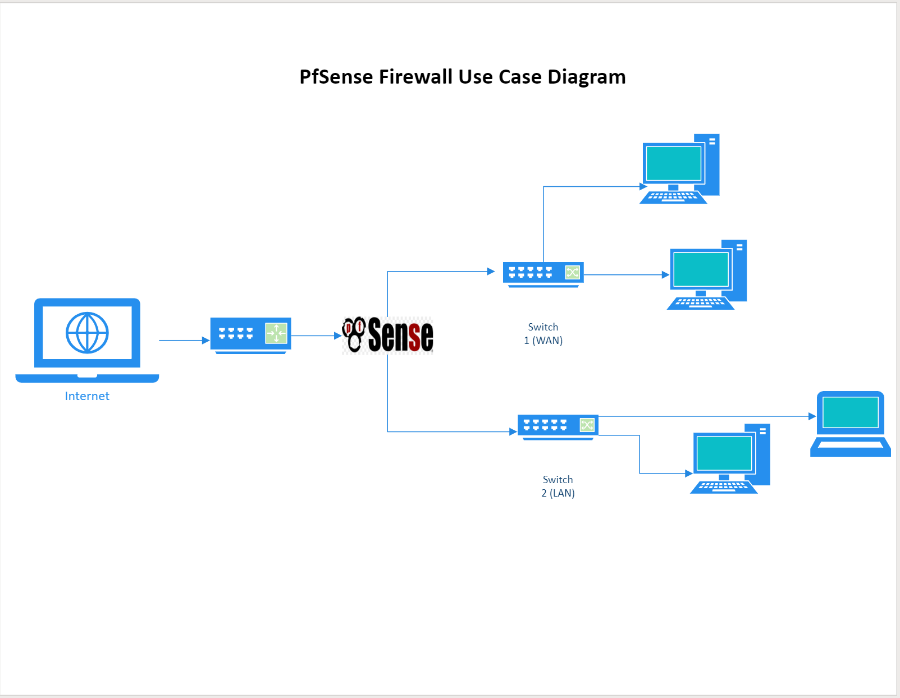

Final-year project · University of Roehampton · 2024
pfSense Firewall for Open-Source Network Security
A virtualised network-security project examining how pfSense could be configured and evaluated for smaller organisations and home-office environments, with attention to security, functionality, usability and performance trade-offs.
01 Verified setup
What the retained project evidence directly shows.
The submitted report contains two pfSense administration screenshots and a network diagram. Together they directly evidence a VMware-hosted pfSense Community Edition instance, three assigned interfaces and a configured DHCP service for the protected LAN.

02 Project scope
Configuration work and technical areas documented.
Directly evidenced
- pfSense running as a VMware virtual machine
- WAN, LAN and LAN2 interface assignments
- DHCP enabled for the protected LAN
- Defined DHCP subnet and address pool
- Network topology separating external and internal paths
Documented in the report
- Firewall rules using addresses, protocols and ports
- NAT, port forwarding and stateful traffic filtering
- IDS/IPS, traffic shaping and content filtering
- Multi-WAN failover and load-balancing concepts
- OpenVPN, IPsec and Squid proxy configuration
03 Evaluation
How the report assessed the firewall.
The report organised the evaluation around security, performance, usability and functionality. It describes allow-and-block rule tests, remote-access checks, content-filtering tests and monitoring of throughput, latency and resource use. Because the submitted document records qualitative conclusions rather than a reproducible numerical results table, the findings below are intentionally expressed without unsupported figures.
Control and visibility
Granular firewall policy, network separation and additional packages offered stronger control than relying only on a basic endpoint firewall.
Power adds complexity
The web interface made initial configuration approachable, but rule management, VPNs and advanced features required greater technical understanding.
Trade-offs matter
The report observed acceptable behaviour for the lab use case while recognising that complex inspection and heavier traffic can add processing overhead.
04 Learning
Challenges, judgement and limitations.
- 01 /Rule interaction: the report records unexpected traffic blocking when failover and firewall rules interacted, resolved through rule analysis and reordering.
- 02 /VPN troubleshooting: certificate mismatches, routing and DNS required careful checking during the OpenVPN work.
- 03 /Configuration depth: IPsec and content-filtering options demonstrated that secure defaults still require informed technical decisions.
- 04 /Evidence limitation: the report does not preserve raw configuration files or exact benchmark tables, so a future reconstruction would be needed for fully reproducible testing.
- 05 /Academic scope: this was a controlled university lab, not a production deployment or commercial security assessment.